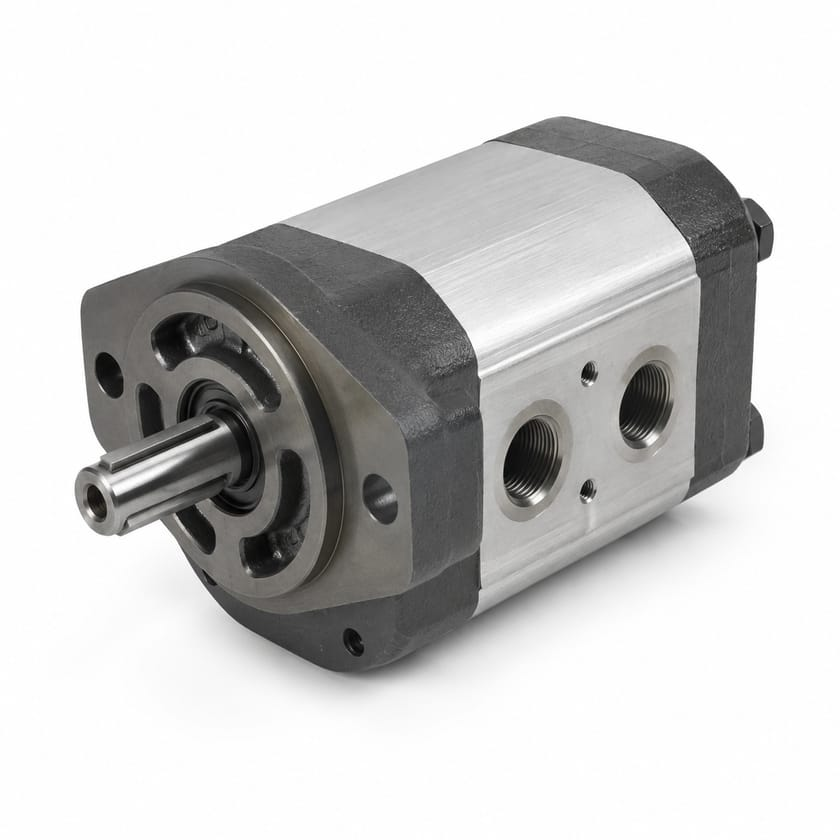
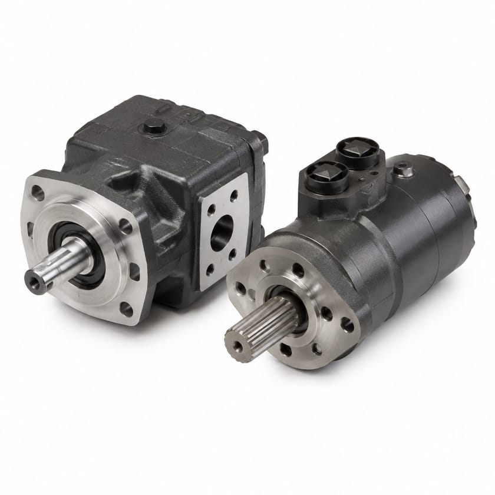
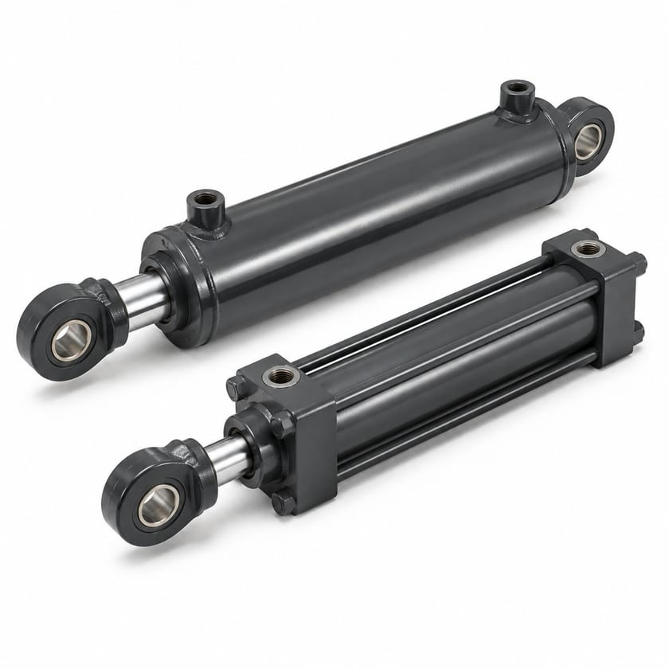
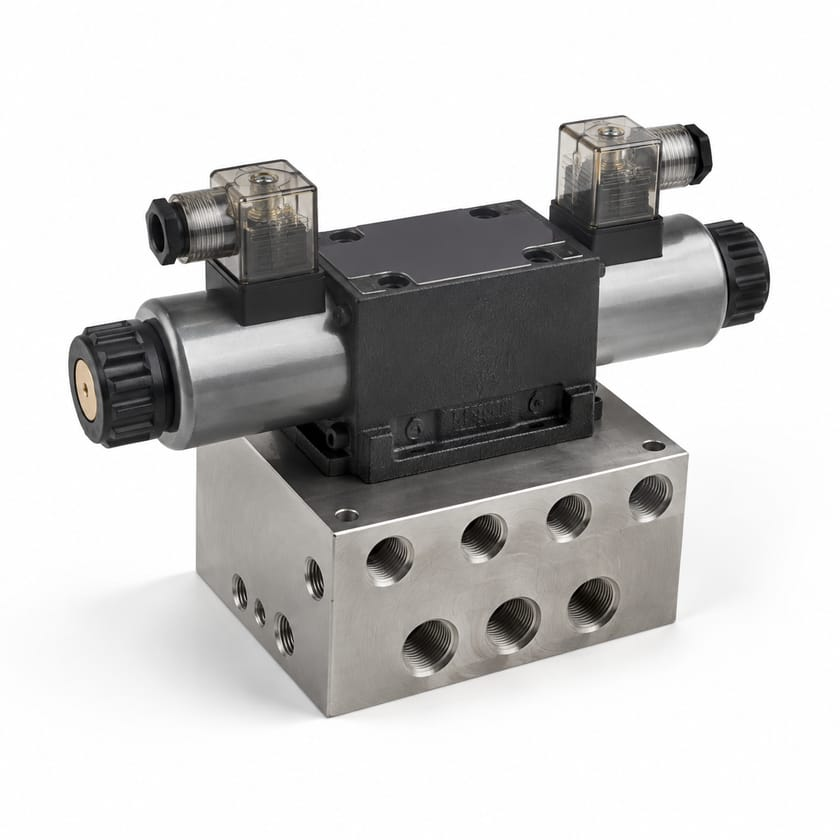
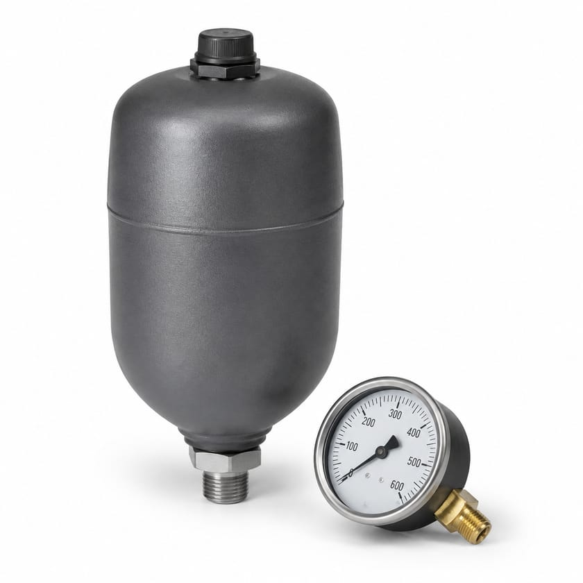
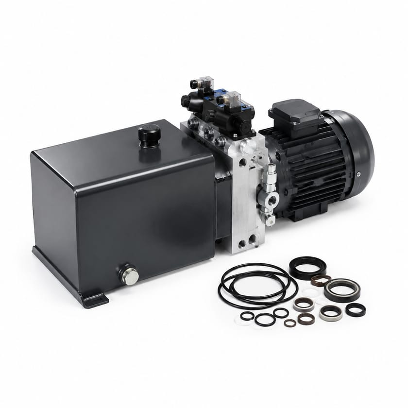

Pompes & moteurs
Gear Pump
Pompe à engrenages à cylindrée fixe, robuste et tolérante aux fluides contaminés.
À préciser Cylindrée (cm³/tr), pression maxi, groupe, bride, arbre et orifices
Demander un prixHydraulique & Puissance Fluidique
Composants hydrauliques, pièces de rechange et appui technique pour les équipements mobiles, les installations industrielles et les opérations critiques.

Parcourir

Pompes à engrenages, à palettes et à pistons, et moteurs hydrauliques.
5 références
Vérins simple et double effet, télescopiques, à tirants et soudés.
5 références
Distributeurs directionnels, proportionnels et de pression, et blocs foncés.
18 références
Accumulateurs, manomètres, capteurs et accessoires de mesure.
11 références
Centrales hydrauliques, joints, kits de réparation, refroidissement et fluides.
20 référencesSélection
Trois articles parmi les plus demandés de la famille. Le catalogue complet se trouve juste en dessous.

Pompes & moteurs
Pompe à engrenages à cylindrée fixe, robuste et tolérante aux fluides contaminés.
À préciser Cylindrée (cm³/tr), pression maxi, groupe, bride, arbre et orifices
Demander un prix
Vérins
Vérin travaillant sous pression dans les deux sens, pour effort contrôlé en poussée et en traction.
À préciser Alésage, diamètre de tige, course, pression, fixation et raccords
Demander un prix
Distributeurs & blocs de distribution
Distributeur orientant le débit vers l’un ou l’autre orifice pour commander le sens de mouvement.
À préciser Nombre de voies et positions, taille NG, débit, pression, commande et tension
Demander un prixCatalogue
Les 59 références types de cette famille. Filtrez, cherchez, puis demandez un prix pour n’importe laquelle.
Aucune référence ne correspond à votre recherche. Décrivez-nous l’article directement : nous l’identifions.
Pompe transformant la puissance mécanique du moteur en débit hydraulique sous pression.
À préciser Cylindrée, pression de service, vitesse, sens de rotation, bride et arbre
Pompes & Moteurs
Pompe à engrenages à cylindrée fixe, robuste et tolérante aux fluides contaminés.
À préciser Cylindrée (cm³/tr), pression maxi, groupe, bride, arbre et orifices
Pompes & Moteurs
Pompe à palettes, à débit régulier et niveau sonore réduit, pour circuits industriels.
À préciser Cylindrée, pression maxi, cartouche fixe ou variable, bride et arbre
Pompes & Moteurs
Pompe à pistons axiaux, haute pression, à cylindrée fixe ou variable.
À préciser Cylindrée, pression maxi et de pointe, régulation, bride et arbre
Pompes & Moteurs
Moteur convertissant le débit hydraulique en couple et rotation sur l’équipement.
À préciser Cylindrée, couple, vitesse, pression, type de montage et d’arbre
Pompes & Moteurs
Vérin poussant sous pression et revenant par gravité ou par ressort.
À préciser Alésage, course, pression de service, type de fixation et raccords
Vérins
Vérin travaillant sous pression dans les deux sens, pour effort contrôlé en poussée et en traction.
À préciser Alésage, diamètre de tige, course, pression, fixation et raccords
Vérins
Vérin à étages multiples offrant une course longue dans un encombrement réduit, typique des bennes.
À préciser Nombre d’étages, course totale, longueur repliée, effort et fixation
Vérins
Vérin à tirants, démontable et reconstructible, standard en machine industrielle.
À préciser Alésage, tige, course, pression, norme de fixation et raccords
Vérins
Vérin à corps soudé, compact et résistant aux chocs, pour engins mobiles.
À préciser Alésage, tige, course, pression, entraxe d’attache et type de chape
Vérins
Distributeur orientant le débit vers l’un ou l’autre orifice pour commander le sens de mouvement.
À préciser Nombre de voies et positions, taille NG, débit, pression, commande et tension
Valves & Distributeurs
Distributeur dont l’ouverture suit le signal de commande, pour des mouvements progressifs.
À préciser Taille NG, débit nominal, pression, signal de commande et électronique associée
Valves & Distributeurs
Distributeur à très haute dynamique pour asservissement de position, de vitesse ou d’effort.
À préciser Débit nominal à ΔP donné, bande passante, pression et signal d’entrée
Valves & Distributeurs
Valve limitant la pression du circuit en dérivant le débit excédentaire vers le réservoir.
À préciser Plage de tarage, débit, pression maxi, type de montage et raccords
Valves & Distributeurs
Valve maintenant une pression réduite et stable sur une branche du circuit.
À préciser Pression amont et aval, plage de réglage, débit et raccords
Valves & Distributeurs
Valve réglant le débit pour fixer la vitesse d’un vérin ou d’un moteur.
À préciser Plage de débit, pression, compensation ou non, et raccords
Valves & Distributeurs
Clapet anti-retour autorisant le passage dans un seul sens.
À préciser Taille, pression d’ouverture, débit, pression maxi et raccords
Valves & Distributeurs
Valve déclenchant un second mouvement une fois une pression atteinte.
À préciser Plage de tarage, débit, pression maxi, drainage et raccords
Valves & Distributeurs
Distributeur commandé électriquement par bobine, pour pilotage automatisé.
À préciser Voies et positions, taille NG, tension et connectique de bobine, débit et pression
Valves & Distributeurs
Bloc foncé usiné regroupant plusieurs fonctions hydrauliques et supprimant la tuyauterie intermédiaire.
À préciser Schéma hydraulique, nombre et type de fonctions, débit, pression et matière
Valves & Distributeurs
Distributeur proportionnel commandant simultanément le sens et la vitesse du mouvement.
À préciser Taille NG, débit nominal, pression, signal de commande et retour de position
Distributeurs proportionnels & blocs foncés
Valve réglant la pression du circuit en continu depuis un signal électrique.
À préciser Plage de pression, débit, signal de commande et type de montage
Distributeurs proportionnels & blocs foncés
Valve dosant le débit en continu pour un contrôle fin de la vitesse.
À préciser Plage de débit, pression, compensation, signal de commande et montage
Distributeurs proportionnels & blocs foncés
Bloc foncé usiné regroupant plusieurs fonctions hydrauliques et supprimant la tuyauterie intermédiaire.
À préciser Schéma hydraulique, nombre et type de fonctions, débit, pression et matière
Distributeurs proportionnels & blocs foncés
Plaque intercalaire ajoutant une fonction de pression ou de débit sous un distributeur existant.
À préciser Taille NG, fonction, plage de réglage, débit et pression
Distributeurs proportionnels & blocs foncés
Valve à visser dans un logement usiné, pour intégration directe en bloc foncé.
À préciser Type de logement, fonction, débit, pression et couple de serrage
Distributeurs proportionnels & blocs foncés
Bobine électrique assurant le pilotage d’un distributeur ou d’une valve à cartouche.
À préciser Tension et fréquence, puissance, diamètre intérieur, connectique et indice IP
Distributeurs proportionnels & blocs foncés
Ensemble de distributeurs empilés commandant plusieurs fonctions depuis une seule alimentation.
À préciser Nombre de sections, fonction par section, débit, pression et type de commande
Distributeurs proportionnels & blocs foncés
Accumulateur à vessie stockant de l’énergie et amortissant les pics de pression.
À préciser Volume, pression de service et de pré-charge, fluide et raccordement
Accumulateurs
Accumulateur à piston, adapté aux grands volumes et aux rapports de pression élevés.
À préciser Volume, pression maxi, rapport de compression, position de montage et raccord
Accumulateurs
Accumulateur à membrane, compact, pour petits volumes et amortissement de pulsations.
À préciser Volume, pression de service et de pré-charge, fluide et raccord
Accumulateurs
Nécessaire de gonflage et de contrôle de la pré-charge azote d’un accumulateur.
À préciser Plage de pression, raccord de valve d’accumulateur et raccord bouteille
Accumulateurs
Bloc de sécurité assurant la décharge et l’isolement d’un accumulateur.
À préciser Pression de service, débit, tarage de la soupape et raccordement
Accumulateurs
Collier de fixation maintenant l’accumulateur sur son support ou son châssis.
À préciser Diamètre de l’accumulateur, matière et entraxe de fixation
Accumulateurs
Manomètre de contrôle de la pression d’un circuit ou d’un point de mesure.
À préciser Étendue de mesure, diamètre du cadran, classe, raccord et remplissage glycérine
Instruments & Manomètres
Indicateur de température du fluide, souvent combiné au niveau d’huile.
À préciser Étendue de mesure, longueur de sonde, raccord et contact éventuel
Instruments & Manomètres
Levier de commande manuelle d’un distributeur, avec ou sans rappel.
À préciser Distributeur associé, nombre de sections, type de rappel et crantage
Instruments & Manomètres
Débitmètre de contrôle et de diagnostic du débit dans un circuit hydraulique.
À préciser Plage de débit, pression maxi, précision, raccords et sortie signal
Instruments & Manomètres
Mallette de diagnostic mesurant pression, débit et température sur un circuit.
À préciser Plages mesurées, raccords de test, longueur de flexibles et étui
Instruments & Manomètres
Jeu de joints complet pour la remise en état d’un composant hydraulique.
À préciser Composant et référence d’origine, alésage et tige, matière de joint
Joints & Pièces d'Usure
Joint de tige assurant l’étanchéité dynamique en sortie de vérin.
À préciser Diamètre de tige, logement, profil, matière et température de service
Joints & Pièces d'Usure
Joint de piston séparant les deux chambres du vérin.
À préciser Alésage, logement, profil, matière et pression de service
Joints & Pièces d'Usure
Racleur écartant poussière et boue de la tige avant son retour dans le vérin.
À préciser Diamètre de tige, logement, profil et matière
Joints & Pièces d'Usure
Joint torique d’étanchéité statique, en dimensions métriques ou pouces.
À préciser Diamètre intérieur, section, matière, dureté et température
Joints & Pièces d'Usure
Bague anti-extrusion protégeant le joint torique en haute pression.
À préciser Dimensions du logement, matière, forme fendue ou continue
Joints & Pièces d'Usure
Kit de joints complet pour le rebâtissage d’un vérin hydraulique.
À préciser Marque et référence du vérin, alésage, tige et matière de joint
Kits de réparation
Kit de remise en état d’une pompe : joints, roulements et pièces d’usure.
À préciser Marque, modèle et cylindrée de la pompe, numéro de série
Kits de réparation
Kit de remise en état d’un moteur hydraulique.
À préciser Marque, modèle et cylindrée du moteur, numéro de série
Kits de réparation
Kit de reconstruction d’un distributeur : joints, ressorts et petites pièces.
À préciser Type et taille du distributeur, référence d’origine
Kits de réparation
Jeu de joints plats pour brides, embases et plans de joint.
À préciser Dimensions, matière, épaisseur et pression de service
Kits de réparation
Plaques d’usure remplaçables restaurant le rendement volumétrique d’une pompe.
À préciser Marque et modèle de pompe, cylindrée et référence d’origine
Kits de réparation
Échangeur évacuant la chaleur du fluide pour tenir la température de service.
À préciser Puissance à évacuer, débit, ΔT visé, type air ou eau et raccordement
Refroidissement & Fluides
Refroidisseur d’huile à air ou à eau, avec ou sans motoventilateur.
À préciser Débit, puissance dissipée, tension du motoventilateur et raccords
Refroidissement & Fluides
Huile hydraulique minérale répondant aux classes de viscosité usuelles.
À préciser Classe ISO VG, spécification exigée, conditionnement et quantité
Refroidissement & Fluides
Fluide hydraulique biodégradable pour sites sensibles ou proches de l’eau.
À préciser Classe ISO VG, famille (HEES, HETG), agrément exigé et conditionnement
Refroidissement & Fluides
Centrale hydraulique complète : moteur, pompe, réservoir et appareillage sur un châssis.
À préciser Débit, pression, puissance et tension moteur, volume de réservoir et fonctions
Centrales Hydrauliques
Groupe hydraulique compact alimentant une machine ou un outil isolé.
À préciser Débit, pression, alimentation électrique, réservoir et type de commande
Centrales Hydrauliques
Mini-centrale à encombrement réduit pour applications à faible débit.
À préciser Débit, pression, tension (CC ou CA), volume utile et fonctions intégrées
Centrales Hydrauliques
Centrale hydraulique mobile, thermique ou électrique, pour intervention sur site.
À préciser Débit, pression, motorisation, autonomie et flexibles fournis
Centrales Hydrauliques
Les photographies illustrent le type d’article et ne représentent ni une marque ni une référence précise. Tout article du catalogue peut être demandé, photographié ou non.
Applications
Sourcing technique
Vous n’avez pas toujours besoin de connaître la référence exacte. SUJO peut analyser une plaque signalétique, une photo, un plan, une fiche technique ou un composant existant afin d’identifier la bonne pièce, de vérifier la compatibilité et de proposer des solutions OEM, équivalentes ou alternatives selon les exigences du projet.
Demander un devis
Tout ce que vous avez suffit pour commencer. S’il vous manque un élément, envoyez le reste : nous complétons par la recherche technique.